THE ZOO GANG, The Twisted Cross
Researched
and compiled by Paul Stroud
All locations in Nice unless otherwise stated
Please help find the Missing Locations for this episode
All locations in Nice unless otherwise stated
Please help find the Missing Locations for this episode
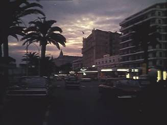
1:11
Boulevard de la Croissette, Cannes
Nice at night.
Boulevard de la Croissette, Cannes
Nice at night.
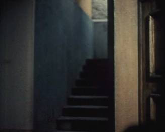
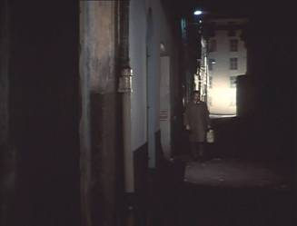
4:35
Ruelle des Moulins
André attacks Schroder in the alleyway behind les Pêcheurs. Manouche and Hercule raise the alarm.
Ruelle des Moulins
André attacks Schroder in the alleyway behind les Pêcheurs. Manouche and Hercule raise the alarm.
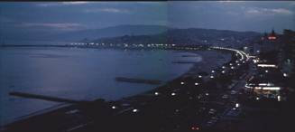
20:56
Boulevard de la Croissette, Cannes
Nice again.
Boulevard de la Croissette, Cannes
Nice again.
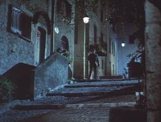
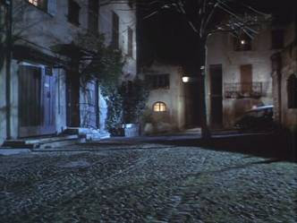
31.59
Cagnes-sur-Mer
Phillipe approaches Tommy’s house. After shooting Tommy he jumps into a car driven by André.
Cagnes-sur-Mer
Phillipe approaches Tommy’s house. After shooting Tommy he jumps into a car driven by André.
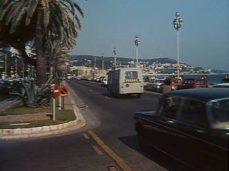
33:33
Promenade des Anglais/Rue Constadt
Newspaper van delivers papers with the headline referring to Tommy’s shooting.
Promenade des Anglais/Rue Constadt
Newspaper van delivers papers with the headline referring to Tommy’s shooting.
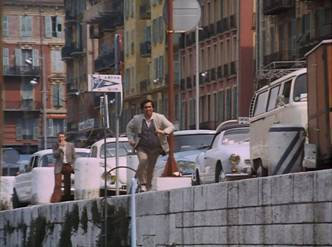
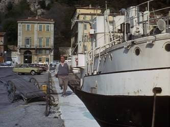
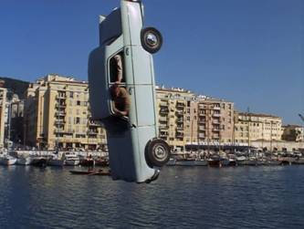
43:38
Quai de la Douane
Now on the other side of the dock, Hercule locates the tramp, then telephones Phillipe and Andre.When they arrive Alec and Steve block their car, then Manouche controlling a crane hoists the car into the air until the police arrive.
Voiture suspendue
Quai de la Douane
Now on the other side of the dock, Hercule locates the tramp, then telephones Phillipe and Andre.When they arrive Alec and Steve block their car, then Manouche controlling a crane hoists the car into the air until the police arrive.
Voiture suspendue
Missing locations
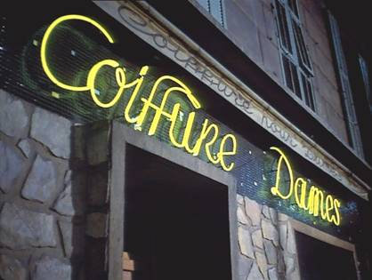
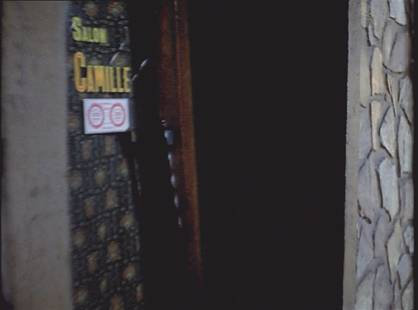
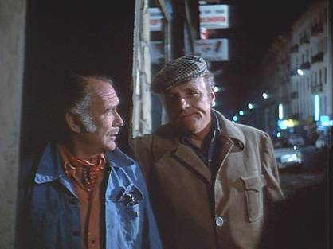
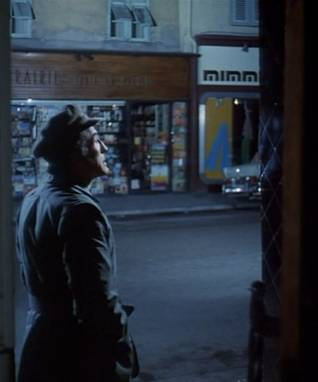
24:37
Hélène Schroder’s Hairdresser, reputedly at 23 Rue Moreau
Separate shots from inside and out show the same door and handle suggesting it’s all filmed at the same location.
Shop signs:
Coiffure pour Dames
Salon Camille
Opposite:
Librairie - Toute la Presse
Hélène Schroder’s Hairdresser, reputedly at 23 Rue Moreau
Separate shots from inside and out show the same door and handle suggesting it’s all filmed at the same location.
Shop signs:
Coiffure pour Dames
Salon Camille
Opposite:
Librairie - Toute la Presse